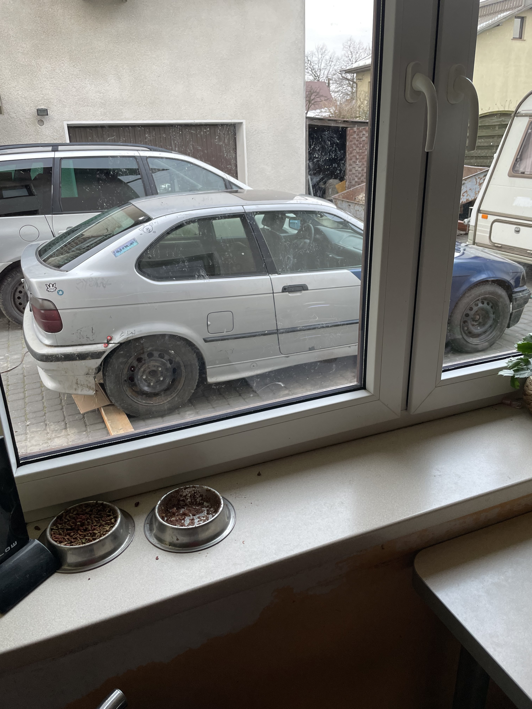
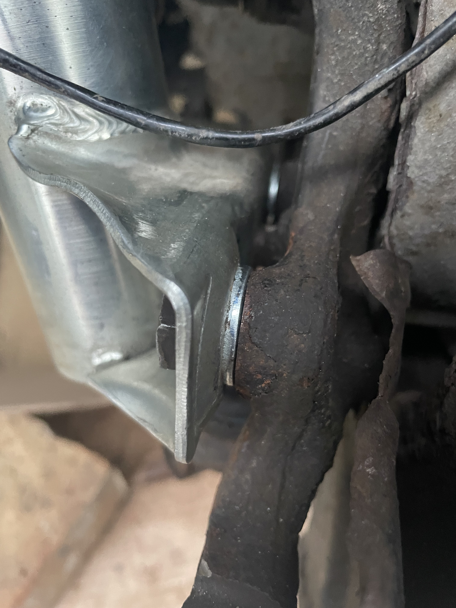
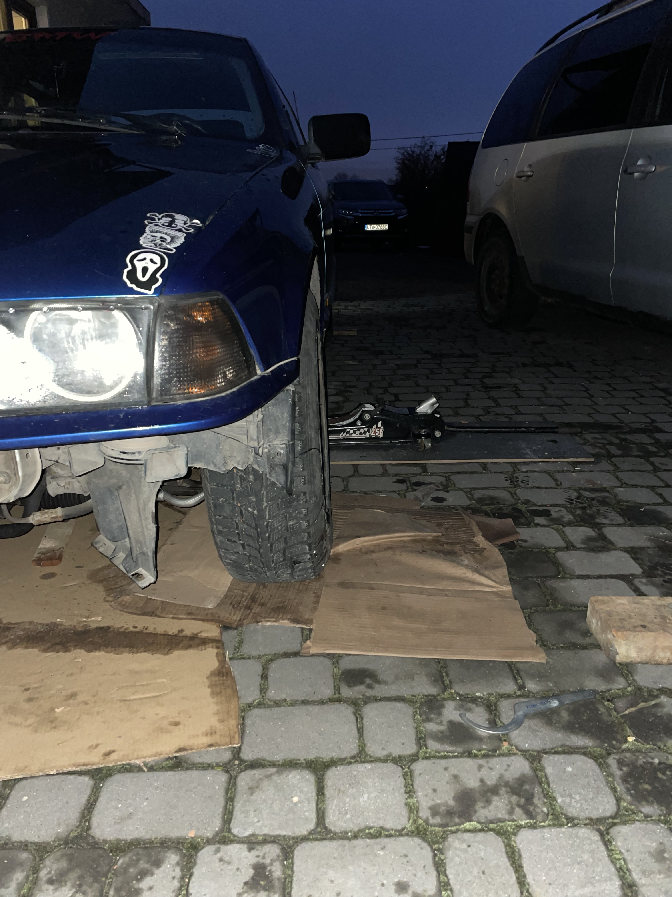

Minęły Święta i Nowy Rok…zima, można by rzec, lecz zimy w zimie tyle co katalizatorów w e36. Za to ja wykonałem, trochę więcej ruchów związanych z gruzingiem. Jestem po pierwszym upalanku w tym roku (i w ogóle) na nowym spocie, więc jest o czym pisać...
Gruz po wymianie belki prowadzi się znośnie. „Znośnie” to bardzo dobre określenie - znosi go na dziurach i na bardzo śliskim, więc trzeba trzymać kierę w gotowości na każdy manewr, który może nadejść znienacka 😂 nadal jestem pod wrażeniem jego mocy…(ciekawe jak długo nie będę narzekał na jej brak) pozostało tylko ćwiczyć.
Po ogarnięciu kilku drobnych detali jak Grażynka Sebixa na ślubowanie pierwszoklasistów, wyprawiłem gruza w miejsce mojego obecnego zamieszkania. Szczęśliwy ze stoi tuz za rogiem, oczekiwałem na warun. Gdy popadało ruszyłem na spocika, który ma tę zaletę ze jest pod nosem.
Kilka słów o spocie
Odcinek drogi serwisowej, dość wąsko, w miarę bez przypałowo, ale z potencjałem na sklejenie fajnego kombosa. Jest kilka fajnych zakrętów dość długich i nie zakończonych rowem, tak że jest - jako tako. Nie ukrywam ze wolałbym polatać na jakimś placu gdzie mogę spokojnie „przedobrzyć”, niż tu, gdzie raczej wymagana jest perfekcja jak w red bull car park series, ale i tak spoko opcja, taki plac zabaw pod domem, siłka w piwnicy, cos takiego😅 myślę ze niebawem uda się stamtąd skleić jakiś onboard.
Mam w telefonie listę miejscówek, które chciałbym odwiedzić, myślę że powstanie post który, jakoś je wszystkie podsumuje gdy już je oblatam. Ale to dość odległa przyszłość.

Co do samej jazdy, jeździłem dość zachowawczo i wolno. Teren jest dość mocno porośnięty roślinnością i widoczność jest słaba. Nie znam jeszcze długości ani kąta tych zakrętów więc nie szalałem. Muszę po prostu oblatać tę miejscówkę, i oblatać auto.
Stwierdziłem, że to co trzyma mój rozwój i fun z jazdy, to auto. „Tłuczek” prowadził się o niebo lepiej i wiem, że gdyby posiadał tyle mocy co niebiesko-srebrna to był by gruzem idealnym. Obecnie moje „treningi” wyglądają tak, że zmieniam coś w aucie, potem jadę polatać i stwierdzam szybko, że jest lepiej, ale to jeszcze nie to. No cóż, cieszę się, z tego, że jeżdżę, a nie stale majstruje przy gruzie. Co najważniejsze, okazało się, po zmianie kół, że to jednak w nich leżał problem przesuniętej tylnej osi. Stalówki miały inne ET. Czemu ja tego wcześniej nie sprawdziłem - nie wiem (headshot).
Skupiam się nadal na ogarnięciu zbieżności i poprawieniu prowadzenia, bo coś mi cały czas nie gra. Wykminiłem nawet ostatnio dość prostego moda na to jak zrobić camber tanim kosztem, więc niedługo wpadnie na stronę poradnik z tego działania. Mam nadzieje, że żmudne konfigurowanie auta i oblatywanie w końcu się zakończy gruzem idealnym. Jest jeszcze opcja, że gruz mnie pokona i stwierdzę, że doprowadzenie go do stanu, jakiegokolwiek trzymania się kupy i właściwości jezdnych jest nie możliwe do osiągnięcia przeze mnie. Nie wiem jak będzie. Póki co majstruje i jeżdżę, idę w dobrą stronę (chyba...no przynajmniej mi się tak wydaje :)).
EDIT 1.02.2023r.
 Poszerzając swoją wiedzę na temat ustawiania zawieszenia do driftu i nie tylko, stwierdziłem, że pobawię się ustawieniem zbieżności z przodu (jako, że z tyłu w compacie się jej nie ustawia). Walczyłem pół dnia z zapieczoną kontrą końcówki drążka kierowniczego co skończyło się wymianą obu drążków z końcówkami na nowe. Końcówki były tak zapieczone, że nie było możliwości ich rozkręcić nawet 1,5 metrowym kluczem hydraulicznym który mógł by z pełnym powodzeniem służyć jako broń w inwazji zombie. Tak, więc zakupiłem nowe drążki wraz z końcówkami. Przy okazji tej roboty dodałem też podkładki między dolne mocowanie amortyzatora a zwrotnice, dzięki czemu osiągnąłem delikatny negatyw z przodu, co jest przydatne w driftingowym setting'u auta. Wleciały też podkładki między drążek a mocowanie maglownicy od swagrów, co powiększa kąt skrętu. Na koniec i co chyba najważniejsze ustawiłem wstępnie zbieżność na przyżądzie wykonanym wcześniej z płyt mdf. Link do teg patentu tutaj: prentki. Póki co ustawiłem zbieżność mniej więcej na 0. Tak by nie było różnicy pomiędzy przodem opony a tyłem.
Poszerzając swoją wiedzę na temat ustawiania zawieszenia do driftu i nie tylko, stwierdziłem, że pobawię się ustawieniem zbieżności z przodu (jako, że z tyłu w compacie się jej nie ustawia). Walczyłem pół dnia z zapieczoną kontrą końcówki drążka kierowniczego co skończyło się wymianą obu drążków z końcówkami na nowe. Końcówki były tak zapieczone, że nie było możliwości ich rozkręcić nawet 1,5 metrowym kluczem hydraulicznym który mógł by z pełnym powodzeniem służyć jako broń w inwazji zombie. Tak, więc zakupiłem nowe drążki wraz z końcówkami. Przy okazji tej roboty dodałem też podkładki między dolne mocowanie amortyzatora a zwrotnice, dzięki czemu osiągnąłem delikatny negatyw z przodu, co jest przydatne w driftingowym setting'u auta. Wleciały też podkładki między drążek a mocowanie maglownicy od swagrów, co powiększa kąt skrętu. Na koniec i co chyba najważniejsze ustawiłem wstępnie zbieżność na przyżądzie wykonanym wcześniej z płyt mdf. Link do teg patentu tutaj: prentki. Póki co ustawiłem zbieżność mniej więcej na 0. Tak by nie było różnicy pomiędzy przodem opony a tyłem.
 Szybka jazda testowa pokazała, że jest o niebo lepiej. Zrobiłem duży krok na przód jeśli chodzi o setting. Fura prowadzi się pewniej i jest jakaś taka bardziej „zwarta”. Niestety czas mnie gonił i nie miałem zbyt wiele czasu na latanie. Myślę, że na razie nie będę nic zmieniał w ustawieniach auta i zacznę więcej jeździć. Ten wpis kończę moim setem. W razie jakichkolwiek zmian będę aktualizował go w kolejnych postach.
Gruz settings by Zielsone
Opony przód: 2.1 Bar
Opony tył: 2.8 Bar
Gwint przód: 6,5cm (moje miary tj, między kontrą od regulacji a górnym punktem pierwszego mocowania na ladzę amortyzatora)[Setting zimowy, na wiosnę spróbuję niżej]
Tył: Sprężyny MTS -30mm i tak chyba zostanie, jeździ mi się na tym dobrze
 Camber z przodu: 1 podkładka (nie wiem ile to stopni) myślę że większego nie potrzebuję, z racji, że mam odpięty tylny hebel, obawiam się że hamowanie na prostych kołach przy większym camberze byłoby ekstemalnie chujowe.
Zbieżność: 0. – Może spróbuję jeszcze ustawienia delikatnie rozbieżnego, bo słyszałem zdania podzielone jeśli chodzi o ustawienia do driftu, jedni mówią 0 inni, że delikatnie rozbieżnie nie zaszkodzi, zobaczymy.
Kąt wyprzedzenia osi zwrotnicy(caster):Seryjny- nie mam jak ustawić, idąc dalej z progressem mojej wiedzy i doświadczenia, pokuszę się może o zakup podkładek pod kielichy od M3 lub jakiś camber plates-ów, na którym można ustawić KWSZ.
Stay tuned !